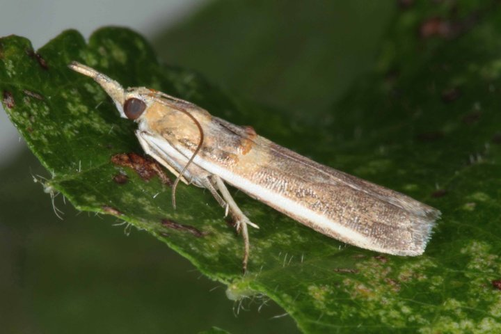

<div class="modal fade" id="ulatPenggerek" tabindex="-1" role="dialog" aria-labelledby="myModalLabel" aria-hidden="true">
                                <div class="modal-dialog">
                                    <div class="modal-content">
                                        <div class="modal-header">
                                            <button type="button" class="close" data-dismiss="modal" aria-hidden="true">&times;</button>
                                            <h4 class="modal-title" id="myModalLabel">Ulat Penggerek Polong</h4>
                                        </div>
                                        <div class="modal-body">
                                            
                                            <p> </p>
											Nama latin : <em>Etiella zinckenella</em><br>
                                            Jenis serangga : Ulat<br>
                                            Bagian tanaman yang diserang : Polong<br>
                                            Fase tanaman yang diserang : Berbunga (31 - 50 hari setelah tanam), Pertumbuhan polong (51 - 70 hari setelah tanam), Pemasakan polong (71 hari setelah tanam - panen)<br>
                                            Tempat peletakan telur : Atas daun dan bawah daun<br>
                                            Ukuran tubuh nimfa / larva : 13 - 15 mm<br>
                                            Ukuran tubuh imago : 1 - 1.2 cm<br>
                                            Warna tubuh imago : Abu - abu<br>
                                            Fase metamorfosis : Sempurna<br>
                                            Fase hama yang menyerang tanaman : Nimfa / Larva<br>
                                            Gejala : Polong berlubang bulat dan penurunan kualitas biji<br>
                                            <p> </p>
                                            Cara Pengendalian :<br>
                                            <ul>
                                            <li>Tanam serempak</li>
                                            <li>Tanam tanaman perangkap <em>Sesbania rostrata</em></li>
                                            <li>Semprot insektisida</li>
                                            
                                            </ul>
											<p> </p>
											Jenis Insektisida :<br> 
											<ul>
											<li>Atabron 50 EC</li>
											<li>Buldok 25 EC</li>
											<li>Cymbush 50 EC</li>
											<li>Fastac 15 C</li>
											<li>Marshall 200 EC</li>
											<li>Matador 25 EC</li>
											<li>Ripcord 5 EC</li>
											</ul>
                                        </div>
                                        <div class="modal-footer">
                                            <button type="button" class="btn btn-default" data-dismiss="modal">Close</button>
                                            
                                        </div>
                                    </div>
                                    <!-- /.modal-content -->
                                </div>
                                <!-- /.modal-dialog -->
                            </div>